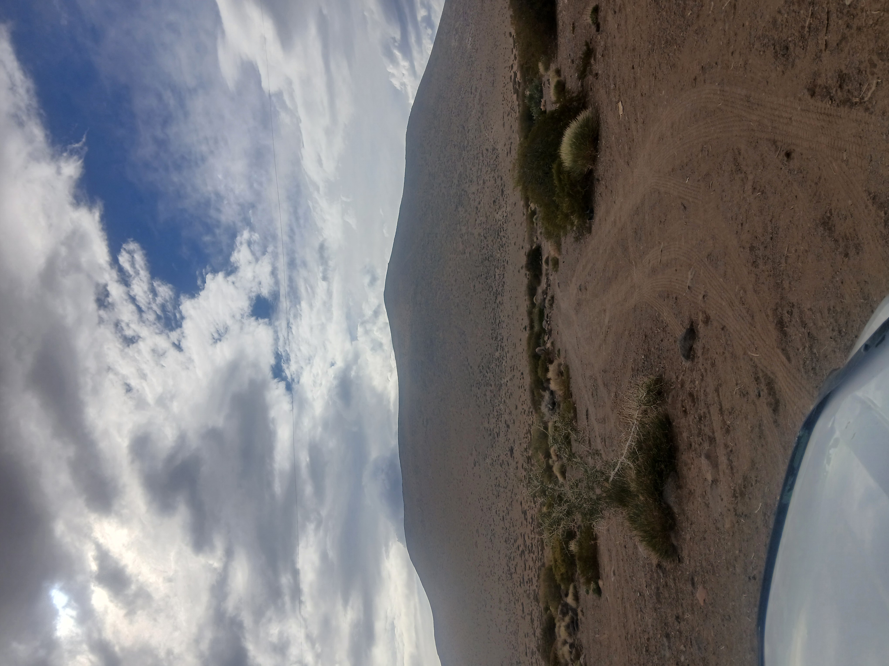

🏔️ El camino hacia las Barrancas: Geografía de la Puna Neuquina
📅 25 de agosto de 2026 · ⏱️ 3 min de lectura

Esta foto la saqué en el camino hacia Barrancas, Neuquén, y muestra bastante bien cómo es el paisaje de esta zona de precordillera: un terreno árido, dominado por un cerro de perfil suave y una huella de tierra que se pierde entre la vegetación baja.
🌄 Un relieve de origen volcánico
El cerro que se ve al fondo tiene esa forma redondeada y sin vegetación densa típica de las formaciones volcánicas antiguas de la región neuquina. Esta zona forma parte de una franja de la Patagonia árida donde el vulcanismo dejó su huella en conos y mesetas suavizados por miles de años de erosión eólica e hídrica.
🌿 Vegetación de estepa
En primer plano se ve la vegetación característica de la estepa patagónica: arbustos bajos y dispersos, adaptados a la escasez de agua y a los fuertes vientos. Son plantas resistentes, con hojas pequeñas o espinosas, que logran sobrevivir en un suelo pedregoso y con muy poca materia orgánica.
☁️ El cielo como parte del paisaje
El cielo parcialmente nublado que se ve en la imagen es habitual en esta zona: las corrientes de aire que suben desde la cordillera generan nubosidad cambiante durante el día, aunque las precipitaciones son escasas la mayor parte del año.
📍 Contexto: Este camino es uno de los accesos de tierra que se usan para llegar a la zona de las Barrancas, sin asfaltar en gran parte de su recorrido. Si te interesa más sobre el lugar, en el blog tengo una guía completa para visitarlas.
💡 Los comentarios se cargan desde GitHub. Inicia sesión para participar.